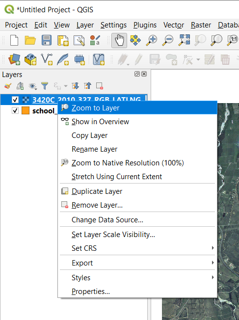
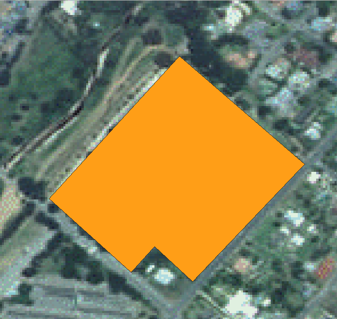

5.1. သင်ခန်းစာ- Vector Dataset အသစ်တစ်ခုဖန်တီးခြင်း (Lesson: Creating a New Vector Dataset)
သင်အသုံးပြုသော data များသည် တစ်နေရာရာမှ လာသော data များဖြစ်သည်။ အသုံးအများဆုံး application များအတွက် data များသည် ရှိနေပြီးသားဖြစ်သည်။ သို့သော် အထူးသီးသန့်ဖြစ်သော project များအတွက် အသင့်သုံးစွဲရန် data ရှိနေခြင်း နည်းပါးပါသည်။ ထိုကိစ္စများတွင် သင့်အနေဖြင့် သင့်ကိုယ်ပိုင် data အသစ်များကို ဖန်တီးရန်လိုအပ်လာပါသည်။
ဤသင်ခန်းစာအတွက် ရည်မှန်းချက်- Vector dataset အသစ်တစ်ခုဖန်တီးရန်
5.1.1. ★☆☆ လိုက်လုပ်ကြည့်ပါ- Layer ဖန်တီးခြင်း Dialog (Follow Along: The Layer Creation Dialog)
Vector data အသစ်တစ်ခုကို မထည့်သွင်းခင်တွင် ၎င်း data ကို ထည့်သွင်းမည့် vector dataset တစ်ခုလိုအပ်ပါသည်။ ဤဥပမာတွင် ရှိနေပြီးသား dataset တစ်ခုကို edit ပြုလုပ်ခြင်းထက် data အသစ်တစ်ခုလုံးကို ဖန်တီးခြင်းဖြင့် စတင်ပါမည်။ ထို့ကြောင့် ကိုယ်ပိုင် dataset အသစ်ကို ဦးစွာ သတ်မှတ်ရန် လိုအပ်ပါသည်။
QGIS ကိုဖွင့်ပြီး project အလွတ်တစ်ခုဖန်တီးပါ။
ကိုနှိပ်ပါ။ Layer အသစ်တစ်ခုကို သတ်မှတ်ပေးနိုင်မည့် New Shapefile Layer dialog ပေါ်လာပါမည်။

File name field အတွက် … ကိုနှိပ်ပါ။ သိမ်းဆည်းမည့် idalog တစ်ခုပေါ်လာပါလိမ့်မည်။
exercise_dataဖိုင်လမ်းကြောင်းသို့ ညွှန်ပေးလိုက်ပါ။Layer အသစ်ကို
school_property.shpအဖြစ် သိမ်းဆည်းပါ။ဤအဆင့်တွင် မည်သည့် dataset အမျိုးအစားကို လိုချင်သည်ကို ဆုံးဖြတ်ရန် အရေးကြီးပါသည်။ မတူညီသော Vector layer အမျိုးအစားတစ်ခုချင်းစီသည် နောက်ကွယ်တွင် “တည်ဆောက်ပုံမတူညီပါ” ၊ ထို့ကြောင့် layer ကိုဖန်တီးပြီးသည်နှင့် ၎င်း၏အမျိုးအစားကို မပြောင်းလဲနိုင်ပါ။
နောက်လာမည့် လေ့ကျင့်ခန်းအတွက် ဧရိယာများကိုဖော်ပြမည့် feature အသစ်များကို ဖန်တီးသွားပါမည်။ ထိုသို့သော feature များအတွက် polygon dataset တစ်ခုကို ဖန်တီးရန် လိုအပ်ပါလိမ့်မည်။
Geometry Type အတွက် dropdown menu မှ Polygon ကိုရွေးချယ်ပါ-

Dialog ၏ကျန်သောအပိုင်းများတွင် သက်ရောက်မှုမရှိသော်လည်း vector dataset ကိုဖန်တီးသောအခါ အသုံးပြုမည့် ဂျီဩမေတြီအမျိုးအစားကို မှန်ကန်စေပါသည်။
နောက်ထပ် field တွင် Coordinate Reference System (ရည်ညွှန်းကိုဩဒိနိတ်စနစ်) သို့မဟုတ် CRS ကိုသတ်မှတ်ပေးနိုင်ပါသည်။ CRS သည် ကမ္ဘာ့မြေမျက်နှာပြင်ပေါ်ရှိ တည်နေရာတစ်ခုကို ကိန်းဂဏန်း ကိုဩဒိနိတ်များဖြင့် ဆက်စပ်ပေးသည့် နည်းလမ်းတစ်ခုဖြစ်ပါသည်။ ထပ်မံလေ့လာရန် အသုံးပြုသူလမ်းညွှန်ရှိ Working with Projections တွင်ကြည့်ရှုပါ။
ဤဥပမာအတွက် default CRS ဖြစ်သော WGS84 ကို အသုံးပြုပါမည်။

New Field အောက်တွင် အုပ်စုဖွဲ့ထားသော field များအစုအဝေးတစ်ခု ရှိပါသည်။ Default အားဖြင့် layer အသစ်တစ်ခုသည်
idfield ဆိုသော attribute တစ်ခုသာရှိပါသည် (Fields list ထဲတွင် မြင်တွေ့ရနိုင်ပါသည်)။ သို့သော် ဖန်တီးမည့် data သည် အသုံးဝင်စေရန်အတွက် layer အသစ်ထဲတွင် ဖန်တီးမည့် feature များအကြောင်း တစ်စုံတစ်ရာကို ပြောပြရန် လိုအပ်ပါသည်။ လက်ရှိအရText dataများထည့်သွင်းမည့်nameဟုခေါ်သော field တစ်ခုထည့်သွင်းလျှင် လုံလောက်မည်ဖြစ်ပြီး စာသား၏အလျားကို စာလုံးရေ80ဖြင့်ကန့်သတ်ထားပါမည်။အောက်တွင်ပြထားသော setup အတိုင်းထား၍ Add to Fields List ခလုတ်ကို နှိပ်ပါ-

Dialog သည် အောက်ပါပုံစံအတိုင်း ဖြစ်/မဖြစ် စစ်ဆေးကြည့်ပါ-

OK ကိုနှိပ်ပါ။
Layers panel ထဲတွင် layer အသစ် ပေါ်လာသင့်ပါသည်။
5.1.2. ★☆☆ လိုက်လုပ်ကြည့်ပါ- Data အရင်းအမြစ်များ (Follow Along: Data Sources)
Data အသစ်များဖန်တီးသောအခါ မြေပြင်ပေါ်တွင် အမှန်တကယ်ရှိသော အရာဝတ္ထုများအကြောင်း ဖြစ်ရပါမည်။ ထို့ကြောင့် တစ်နေရာရာမှ အချက်အလက်များကို ရယူရန် လိုအပ်ပါသည်။
အရာဝတ္ထုများအကြောင်း data များကိုရယူရန် နည်းလမ်းများစွာရှိပါသည်။ ဥပမာ- လက်တွေ့မြေပြင်တွင်ရှိသော point များကို ရယူရန် GPS ကိုအသုံးပြုပြီး data များကို QGIS ထဲသို့ထည့်သွင်းနိုင်ပါသည်။ သို့မဟုတ် point များကို theodolite အသုံးပြုပြီး တိုင်းတာနိုင်ပြီး ကိုဩဒိနိတ်များကို ကိုယ်တိုင်ရိုက်ထည့်ကာ feature အသစ်များကို ဖန်တီးနိုင်ပါသည်။ သို့မဟုတ် ဂြိုလ်တုဓာတ်ပုံ သို့မဟုတ် ကောင်းကင်ဓာတ်ပုံ ကဲ့သို့သော remote sensing data များမှ အရာဝတ္ထုများကို ခြေရာခံရန် digitizing process (မြေပုံအချက်အလက်ရေးဆွဲခြင်းလုပ်ငန်းစဉ်) ကိုအသုံးပြုနိုင်ပါသည်။
ယခုဥပမာအတွက် digitizing နည်းလမ်းကို အသုံးပြုပါမည်။ နမူနာ raster dataset များကို ပေးထားပါသည်၊ ထို့ကြောင့် ၎င်း dataset များကို လိုအပ်သလို ထည့်သွင်းရန် လိုအပ်ပါမည်။
 Data Source Manager ခလုတ်ကို နှိပ်ပါ။
Data Source Manager ခလုတ်ကို နှိပ်ပါ။ဘယ်ဘက်အခြမ်းရှိ
 Raster ကို select လုပ်ပါ။
Raster ကို select လုပ်ပါ။Source panel ထဲတွင် … ခလုတ်ကိုနှိပ်ပါ-
exercise_data/raster/သို့ညွှန်ပေးပါ။3420C_2010_327_RGB_LATLNG.tifဖိုင်ကိုရွေးချယ်ပါ။Dialog window ကိုပိတ်ရန် Open ကိုနှိပ်ပါ။
Add ကိုနှိပ်ပြီး Close ကိုနှိပ်ပါ။ မြေပုံထဲတွင် ဓာတ်ပုံ တစ်ခု ပေါ်လာပါလိမ့်မည်။

ကောင်းကင်ဓာတ်ပုံတစ်ခုပေါ်လာသည်ကို မမြင်ရလျှင် layer အသစ်ကို select လုပ်ပြီး right-click နှိပ်ကာ Zoom to Layer ကိုရွေးပါ။
  Zoom In ခလုတ်ကိုနှိပ်လိုက်ပြီး အောက်ဖော်ပြပါ အပြာရောင်ဖြင့် highlight (ထင်ရှားအောင်ပြသ) ပြထားသော ဧရိယာကို zoom ချဲ့ပါ-
Zoom In ခလုတ်ကိုနှိပ်လိုက်ပြီး အောက်ဖော်ပြပါ အပြာရောင်ဖြင့် highlight (ထင်ရှားအောင်ပြသ) ပြထားသော ဧရိယာကို zoom ချဲ့ပါ-
အောက်ပါ field ၃ ခုကို digitize လုပ်နိုင်ပြီ ဖြစ်ပါသည်-
Digitize စတင်မလုပ်မီ school_property layer ကို ကောင်းကင်ဓာတ်ပုံ၏ အပေါ်သို့ ရွှေ့ပါ။
Layers pane ထဲရှိ
school_propertylayer ကို select လုပ်ပြီး အပေါ်သို့ ဖိဆွဲတင်ပါ။
Digitizing စတင်ရန် edit mode သို့ဝင်ရန် လိုအပ်ပါသည်။ ထိုသို့လုပ်ခြင်းသည် အရေးကြီးသော data များကို အမှတ်တမဲ့ edit လုပ်မိခြင်း သို့မဟုတ် ဖျက်မိဖြင်းမဖြစ်စေရန် ကာကွယ်ပေးသည်။ Edit mode ကို layer တစ်ခုချင်းစီအတွက် သီးသန့် အဖွင့်အပိတ်ပြုလုပ်ပေးပါသည်။
school_property layer အတွက် edit mode သို့ဝင်ရန်-
Layers panel ထဲရှိ
school_propertylayer ကို နှိပ်ပြီး select လုပ်ပါ။ Toggle Editing ခလုတ်ကို နှိပ်ပါ။
Toggle Editing ခလုတ်ကို နှိပ်ပါ။ထိုခလုတ်ကိုရှာမတွေ့လျှင် Digitizing toolbar ကိုဖွင့်ထား/မထား စစ်ဆေးပါ။ menu ၏ဘေးတွင် အမှန်ခြစ်ရှိရမည်ဖြစ်သည်။
Edit mode ထဲရောက်သွားလျှင် digitizing tool အချို့ active ဖြစ်လာသည်ကို မြင်တွေ့ရပါလိမ့်မည်-
 Capture Polygon
Capture Polygon Vertex Tool
Vertex Tool
အခြားသက်ဆိုင်ရာ ခလုတ်များ active မဖြစ်သေးသော်လည်း data အသစ်များဖြင့် အပြန်အလှန်စတင်လုပ်ကိုင်သောအခါ active ဖြစ်လာပါလိမ့်မည်။
Layers panel ထဲရှိ
school_propertyတွင် ခဲတံ icon ပေါ်လာပါလိမ့်မည်၊ ၎င်းသည် edit mode တွင် ရှိနေသည်ကို ဖော်ပြခြင်းဖြစ်သည်။School ကွင်းများကို digitizing စတင်ရန်
Capture Polygon ခလုတ်ကို နှိပ်ပါ။Mouse cursor သည် ကြက်ခြေခတ် ပုံစံဖြစ်လာပါလိမ့်မည်။ ၎င်းသည် digitizing ပြုလုပ်မည့် point များကို ပိုမိုတိကျစွာ နေရာချထားနိုင်စေပါသည်။ Digitizing ပြုလုပ်နေစဉ်တွင် mouse ဘီးလုံးကို အသုံးပြုပြီး မြေပုံကို zoom အချုံ့/အချဲ့ ပြုလုပ်နိုင်ပြီး mouse ဘီးလုံးကို ဖိထားပြီး မြေပုံထဲတွင် တစ်နေရာမှတစ်နေရာသို့ ရွှေ့နိုင်မည်ဖြစ်သည်။
Digitize ပြုလုပ်မည့် ပထမဆုံး feature သည် athletics field ဖြစ်ပါသည်-

ကွင်းပြင်၏ အစွန်းတလျှောက်တစ်နေရာတွင် point တစ်ခုကို click နှိပ်ခြင်းဖြင့် digitizing ကိုစတင်ပါ။
ကွင်းပြင်တစ်ခုလုံးကို အပြည့်အဝ လွှမ်းခြုံသည်အထိ အစွန်းတလျှောက်တွင် နောက်ထပ် click များထပ်နှိပ်ပြီး point များကို နေရာချပါ။

နောက်ဆုံး point ကိုနေရာချပြီးသောအခါ polygon ရေးဆွဲခြင်းကို အဆုံးသတ်ရန် right-click ကိုနှိပ်ပါ။ ထိုသို့လုပ်ခြင်းသည် feature ကို အဆုံးသတ်ပေးပြီး Attributes dialog ကို ပြသပေးပါလိမ့်မည်။
တန်ဖိုးများကို အောက်ပါအတိုင်း ဖြည့်ပါ-
OK ကိုနှိပ်ပါ၊ ထို့နောက်တွင် feature အသစ်တစ်ခုဖန်တီးပြီးဖြစ်ပါလိမ့်မည်။

Layers panel ထဲတွင်
school_propertylayer ကို select လုပ်ပါ။Right click နှိပ်ပြီး Open Attribute Table ကိုရွေးပါ။

ဇယားထဲတွင် ထည့်သွင်းထားသော feature ကို မြင်တွေ့ရပါလိမ့်မည်။ Edit mode ထဲရှိနေစဉ်တွင် update ပြုလုပ်လိုသော cell ပေါ်တွင် click နှစ်ချက်နှိပ်ပြီး attribute data များကို update လုပ်နိုင်ပါသည်။

Attribute ဇယားကို ပိတ်လိုက်ပါ။
ဖန်တီးထားသော feature အသစ်ကို သိမ်းဆည်းရန်
 Save Edits ခလုတ်ကို နှိပ်ပါ။
Save Edits ခလုတ်ကို နှိပ်ပါ။
Feature တစ်ခုကို digitize ပြုလုပ်နေစဉ်တွင် အမှားအယွင်းတစ်ခုခုပြုလုပ်မိလျှင် ဖန်တီးပြီးသည့်အချိန်တွင် ပြန်လည် edit လုပ်နိုင်ပါသည်။ အမှားအယွင်းတစ်ခုခုလုပ်မိလျှင် အထက်ပါအတိုင်း feature ဖန်တီးခြင်းကို ပြီးဆုံးအောင်အထိ digitize ပြုလုပ်ပါ။ ထို့နောက်-
- Vertex Tool ခလုတ်ကိုနှိပ်ပါ။
ရွှေ့လိုသော vertex ၏အပေါ်သို့ mouse cursor ကိုတင်ပြီး vertex ပေါ်တွင် left click နှိပ်ပါ။
နေရာအမှန်သို့ mouse ကိုရွှေ့ပြီး left click နှိပ်ပါ။ Vertex ကို တည်နေရာအသစ်သို့ ရွှေ့ပေးပါလိမ့်မည်။
 Line မျဉ်းပိုင်းများကို ထိုနည်းအတိုင်း ရွှေ့ပေးနိုင်ပါသည်၊ သို့သော် line မျဉ်းပိုင်း၏ အလယ်မှတ်ပေါ်တွင် mouse ကိုတင်ထားရန် လိုအပ်ပါသည်။
ပြောင်းလဲမှုတစ်ခုကို undo ပြုလုပ်လိုလျှင်
 Undo ခလုတ် သို့မဟုတ် Ctrl+Z ကိုနှိပ်နိုင်ပါသည်။
Undo ခလုတ် သို့မဟုတ် Ctrl+Z ကိုနှိပ်နိုင်ပါသည်။- Save Edits ခလုတ်ကိုနှိပ်ပြီး ပြောင်းလဲမှုများကို သိမ်းဆည်းရန် မမေ့ပါနှင့်။
Edit ပြုလုပ်ပြီးသောအခါ edit mode မှထွက်ရန်
Toggle Editing ခလုတ်ကို နှိပ်ပါ။
5.1.3. ★☆☆ မိမိကိုယ်တိုင်ကြိုးစားကြည့်ပါ- Polygon များကို Digitize ပြုလုပ်ခြင်း (Try Yourself: Digitizing Polygons)
School နှင့်အပေါ်ဘက်ရှိ ကွင်းပြင်ကို digitize ပြုလုပ်ပါ။ အောက်ပါဓာတ်ပုံကို အသုံးပြုပါ-

Feature အသစ်တစ်ခုချင်းစီတွင် သီးသန့် id တန်ဖိုးတစ်ခုစီရှိရမည်ကို သတိရပါ။
Note
Layer တစ်ခုထဲသို့ feature များထည့်သွင်းပြီးသောအခါ edit လုပ်ထားသည်များကို သိမ်းဆည်းရန်နှင့် edit mode မှ ထွက်ရန် မမေ့ပါနှင့်။
Note
school_property အတွက် အရောင်ဖြည့်ခြင်း၊ အနားသတ်မျဉ်း၊ အညွှန်းနေရာချထားခြင်းနှင့် format ပြင်ဆင်ခြင်းများကို အရှေ့ပိုင်းသင်ခန်းစာများတွင် လေ့လာခဲ့သည့် နည်းလမ်းများကိုအသုံးပြုပြီး style ပြင်ဆင်နိုင်ပါသည်။
5.1.4. ★★☆ လိုက်လုပ်ကြည့်ပါ- Vertex Editor Table ကိုအသုံးပြုခြင်း (Follow Along: Using Vertex Editor Table)
Feature တစ်ခုကို edit လုပ်ရန် နောက်ထပ်နည်းတစ်ခုမှာ Vertex Editor table ကိုအသုံးပြုပြီး vertex တစ်ခုချင်းစီအတွက် အမှန်တကယ် ကိုဩဒိနိတ်တန်ဖိုးများကို ကိုယ်တိုင်ရိုက်ထည့်ခြင်းဖြစ်ပါသည်။
school_propertylayer ကို edit mode တွင်ထားပါ။Activate မလုပ်ထားရသေးလျှင်
Vertex Tool ခလုတ်ကိုနှိပ်ပါ။school_propertylayer ထဲရှိ ဖန်တီးထားခဲ့သော polygon feature များထဲမှ တစ်ခုပေါ်သို့ mouse ကိုရွှေ့ပြီး ၎င်းအပေါ်တွင် right-click နှိပ်ပါ။ ထိုသို့လုပ်ခြင်းသည် feature ကို select ပြုလုပ်ပေးမည်ဖြစ်ပြီး Vertex Editor ပွင့်လာပါလိမ့်မည်။
Note
ထိုဇယားတွင် feature ၏ vertex များအတွက် ကိုဩဒိနိတ်များပါဝင်ပါသည်။ ထို feature အတွက် vertex ၇ ခုရှိသော်လည်း မြေပုံဧရိယာထဲတွင် ၆ ခုကိုသာ မြင်ရမည်ကို သတိထားကြည့်ပါ။ သေချာကြည့်ကြည့်ပါက row 0 နှင့် row 6 သည် ကိုဩဒိနိတ်များ တူညီနေသည်ကို တွေ့ရပါလိမ့်မည်။ ၎င်းတို့သည် feature ဂျီဩမေတြီ၏ အစ vertex နှင့် အဆုံး vertex များဖြစ်ကြပါပြီး polygon feature အပိတ်တစ်ခုဖန်တီးရန် လိုအပ်ပါသည်။
Select လုပ်ထားသော feature ၏ vertex တစ်ခု သို့မဟုတ် vertex များပေါ်တွင် click နှိပ်ပြီး လေးထောင့်ကွက်တစ်ခု ဖိဆွဲပါ၊

Select လုပ်ထားသော vertex များသည် အပြာရောင်သို့ ပြောင်းလဲသွားမည်ဖြစ်ပြီး Vertex Editor table တွင် vertex ၏ ကိုဩဒိနိတ်များပါဝင်သော သက်ဆိုင်ရာ row များ highlight ဖြစ်နေပါလိမ့်မည်

ကိုဩဒိနိတ်တစ်ခုကို update လုပ်ရန် ဇယားထဲရှိ edit လုပ်လိုသော cell ပေါ်တွင် click နှစ်ချက်နှိပ်ပြီး တန်ဖိုးအသစ်ကို ရိုက်ထည့်ပါ။ ဤဥပမာတွင် row
4၏ x ကိုဩဒိနိတ်ကို20.4450မှ20.4444သို့ပြောင်းပြီး update လုပ်ထားပါသည်။
Update တန်ဖိုးကို ထည့်သွင်းပြီးနောက် enter ကိုနှိပ်ပါ။ မြေပုံ window ထဲတွင် vertex သည် တည်နေရာအသစ်သို့ ရွေ့သွားသည်ကို မြင်တွေ့ရပါမည်။
Edit ပြုလုပ်ပြီးသောအခါ edit mode မှထွက်ရန်
Toggle Editing ကိုနှိပ်ပြီး edit လုပ်ထားသည်များကို သိမ်းဆည်းပါ။
5.1.5. ★☆☆ မိမိကိုယ်တိုင်ကြိုးစားကြည့်ပါ- Line များကို Digitize ပြုလုပ်ခြင်း (Try Yourself: Digitizing Lines)
လမ်းများ layer ပေါ်တွင် အမှတ်အသားမလုပ်ရသေးသော လမ်းကြောင်း (route) နှစ်ခုကို digitize ပြုလုပ်မည်ဖြစ်ပါသည်၊ တစ်ခုသည် path တစ်ခုဖြစ်ပြီး အခြားတစ်ခုသည် track တစ်ခုဖြစ်သည်။ Path သည် Railton ဆင်ခြေဖုံး၏ တောင်ဘက်အစွန်းတစ်လျှောက်တွင်ရှိပြီး အစနှင့်အဆုံးသည် မှတ်သားထားသော လမ်းများ၌ရှိပါသည်-
Track သည် တောင်ဘက်သို့ အနည်းငယ်ဝေးကွာပါသည်-
roads layer သည် သင့်မြေပုံထဲတွင် မရှိသေးပါက ဒေါင်းလုဒ်ပြုလုပ်ထားသော သင်တန်း data
exercise_datafolder ထဲတွင်ပါဝင်သောtraining-data.gpkgGeoPackage ဖိုင်မှroadslayer ကိုထည့်သွင်းပါ။ မည်သို့ထည့်သွင်းရမည်ကို ★☆☆ လိုက်လုပ်ကြည့်ပါ- GeoPackage Database တစ်ခုမှ vector data ကိုထည့်သွင်းခြင်း (Follow Along: Loading vector data from a GeoPackage Database) တွင်ဖတ်ရှုနိုင်ပါသည်။exercise_datadirectory ထဲတွင်routes.shpအမည်ဖြင့်idနှင့်typeattribute များပါဝင်သော ESRI Shapefile line dataset အသစ်တစ်ခုကို ဖန်တီးပါ (အထက်တွင် ပြထားသော နည်းများကို အသုံးပြုပါ)။routes layer ကို edit mode ဖွင့်ပေးပါ။
Line feature နှင့်လုပ်ဆောင်နေသောကြောင့် line digitizing mode ကိုစတင်ရန်
 Add Line ခလုတ်ကိုနှိပ်ပါ။
Add Line ခလုတ်ကိုနှိပ်ပါ။routeslayer ပေါ်တွင် path နှင့် track ကို တစ်ကြိမ်လျှင် တစ်ခုစီ digitize ပြုလုပ်ပါ။ လမ်းကြောင်းများအတိုင်း တိကျနိုင်သမျှတိကျအောင် ထောင့်ချိုးများနှင့် အကွေ့နေရာများတွင် point များထပ်ထည့်ပြီး ကြိုးစားဆွဲကြည့်ပါ။typeattribute တန်ဖိုးတွင်pathသို့မဟုတ်trackဟုသတ်မှတ်ပါ။ဆွဲထားသော လမ်းကြောင်းများတွင် style ထည့်သွင်းရန် Layer Properties dialog ကိုအသုံးပြုပါ။ Path များနှင့် track များအတွက် မတူညီသော style များကို အသုံးပြုနိုင်ပါသည်။
လုပ်ဆောင်ထားသော edit များကို သိမ်းဆည်းပြီး
Toggle Editing ခလုတ်ကိုနှိပ်ကာ edit mode ကိုပိတ်ပါ။
အဖြေ
သင်္ကေတဆိုင်ရာများသည် အရေးမကြီးသော်လည်း ရလာဒ် အောက်ပါပုံအတိုင်း အနည်းနှင့်အများ ဆင်တူသင့်ပါသည်။

5.1.6. နိဂုံးချုပ် (In Conclusion)
ယခုဆိုလျှင် feature များမည်သို့ဖန်တီးရမည်ကို သိရှိပြီးဖြစ်ပါသည်။ ဤသင်ခန်းစာတွင် point feature များထည့်သွင်းခြင်းမပါဝင်ပါ၊ အကြောင်းမှာ ပိုမိုရှုပ်ထွေးသော feature များ (line များနှင့် polygon များ) ဖြင့်လုပ်ဆောင်ပြီးပြီဖြစ်သည့်အတွက် ထိုအရာသည် မဖြစ်မနေမလိုအပ်တော့ပါ။ Point ထားလိုသော နေရာတွင် click တစ်ချက်သာနှိပ်ရခြင်းမှလွဲ၍ attribute များကို ခါတိုင်းလိုပင် ထည့်သွင်းပြီး feature ကို ဖန်တီးမည်ဖြစ်သည့်အတွက် အလုပ်လုပ်ပုံမှာ အတူတူပင်ဖြစ်သည်။
Digitize ပြုလုပ်တတ်ခြင်းသည် အရေးကြီးပါသည်၊ အကြောင်းမှာ ၎င်းသည် GIS ပရိုဂရမ်များတွင် အလွန်အသုံးများသော လုပ်ဆောင်မှုတစ်ခုဖြစ်ပါသည်။
5.1.7. နောက်ထပ် ဘာအကြောင်းအရာလဲ? (What’s Next?)
GIS layer တစ်ခုထဲရှိ feature များသည် ရုပ်ပုံများသာမဟုတ်ပါ၊ မြေမျက်နှာပြင်ရှိ အရာဝတ္ထုများဖြစ်သည်။ ဥပမာ- ကပ်လျက်ရှိသော polygon များသည် တစ်ခုနှင့်တစ်ခု မည်သည့်နေရာတွင် ဆက်နွယ်မှုရှိသည်ကို သိကြပါသည်။ ၎င်းကို topology (ဆက်စပ်တည်ရှိမှုအရဖွဲ့စည်းပုံ) ဟုခေါ်ပါသည်။ နောက်လာမည့် သင်ခန်းစာတွင် ထိုအရာသည် ဘာကြောင့် အသုံးဝင်နိုင်သည်ဆိုသည့် ဥပမာကို မြင်တွေ့ရပါလိမ့်မည်။